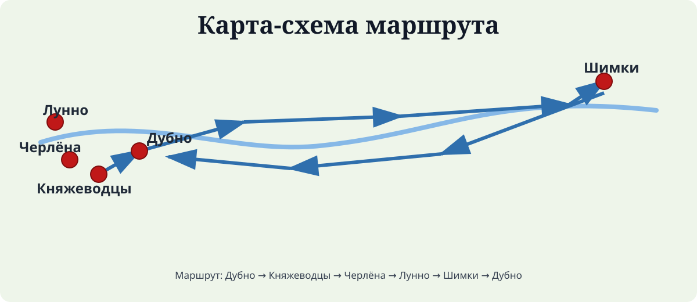

Проект «ДА суседзяу́»
Маршруты памяти
Патриотический маршрут по памятным местам Мостовского района, посвящённым подвигу людей в годы Великой Отечественной войны.
Открыть 5 достопримечательностейКарта маршрута

Проект «ДА суседзяу́»
Патриотический маршрут по памятным местам Мостовского района, посвящённым подвигу людей в годы Великой Отечественной войны.
Открыть 5 достопримечательностей